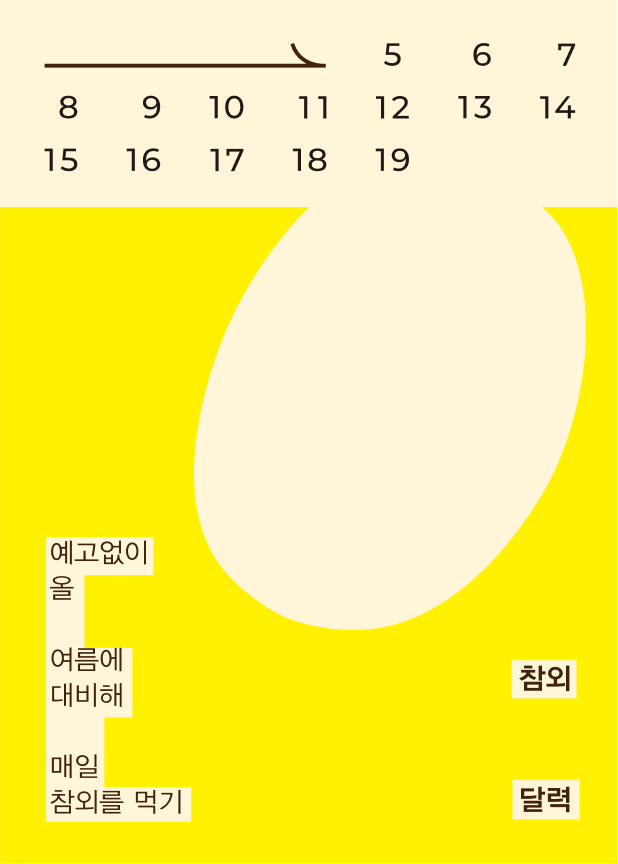
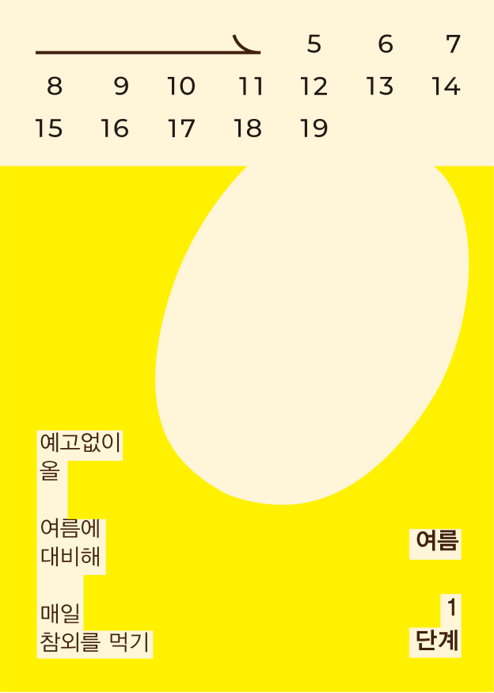
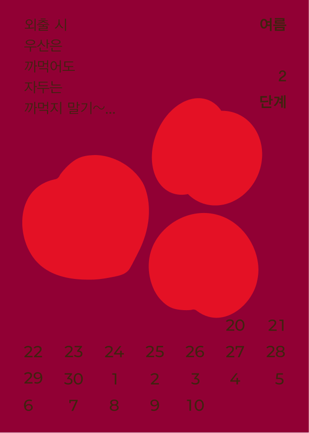
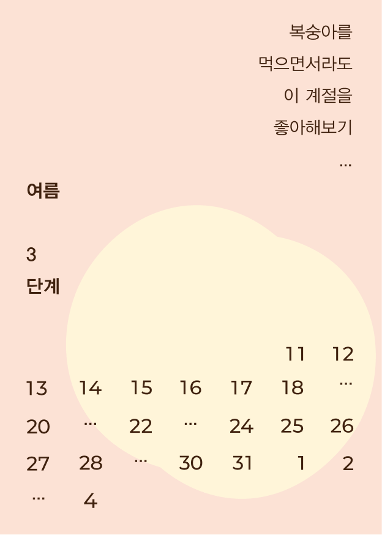
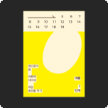
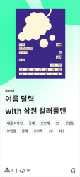

좋아하는 과일의 제철 시기를 알기 위한 엽서형 달력
30분 내에 답장할 수 있습니다! 디벨롭하면서 물어보고 싶으신 게 있으면 언제든 물어봐주세요!






레더 소재로 계승해보고 싶은데 원본 obj 파일 스케일이 어떻게 되나요?
obj 파일은 실제 크기(mm)로 저장했어요, 치수는 함께 받는 안내 문서에 적어뒀어요!
그리스 신화 모티프랑 정말 잘 어울려요! 색상 버전도 기대할게요 🙌
이 바톤을 이어받아 수박 달력을 만들고 있어요. 원본 ai가 레이어별로 정리돼 있어서 바로 시작할 수 있었어요!
과일마다 제철을 보여주는발표 자료가 아직 없어요. 원작자가 가장 바라는 작업이에요.
달력을 레더로 옮겨 굿즈로만들어보고 싶어요. 원본obj는 mm 기준으로 저장돼있어요.
이미지 전환과 바톤로그를 사용하려면 JavaScript를 켜주세요.
댓글 43
레더 소재로 계승해보고 싶은데 원본 obj 파일 스케일이 어떻게 되나요?
obj 파일은 실제 크기(mm)로 저장했어요, 치수는 함께 받는 안내 문서에 적어뒀어요!
그리스 신화 모티프랑 정말 잘 어울려요! 색상 버전도 기대할게요 🙌
이 바톤을 이어받아 수박 달력을 만들고 있어요. 원본 ai가 레이어별로 정리돼 있어서 바로 시작할 수 있었어요!